PORTAL EKSTRAKURIKULER TRISULA PRAJA
Sejarah Singkat
SMA Trisula Praja merupakan konsep sekolah menengah atas yang dirancang sebagai sekolah modern, unggul dalam akademik, teknologi, seni, olahraga, serta pembentukan karakter. Sekolah ini mengusung semangat untuk mencetak generasi muda yang disiplin, kreatif, berintegritas, dan siap bersaing di tingkat nasional maupun internasional.
Catatan: seluruh sejarah, nama pendiri, statistik, prestasi, alamat, dan informasi kontak di bawah ini merupakan data rekaan untuk keperluan desain profil sekolah, website, atau proyek. Data tersebut bukan klaim tentang sekolah nyata.
SMA Trisula Praja didirikan pada 15 Juli 2008 oleh sekelompok tokoh pendidikan dan pemerhati generasi muda yang memiliki visi membangun lembaga pendidikan berkualitas dengan keseimbangan antara ilmu pengetahuan, karakter, dan keterampilan.
Pada awal berdirinya, sekolah ini hanya memiliki 6 ruang kelas, 12 tenaga pendidik, dan 96 siswa angkatan pertama. Berkat dukungan para pendiri, guru, orang tua, dan masyarakat, SMA Trisula Praja berkembang menjadi sekolah yang mengutamakan pembelajaran berbasis teknologi, kegiatan penelitian, kewirausahaan, serta pengembangan bakat siswa.
Memasuki tahun 2018, sekolah mulai memperluas fasilitas laboratorium komputer, perpustakaan digital, lapangan olahraga, dan pusat kegiatan ekstrakurikuler. Pada 2022, sekolah memperkenalkan program Global Student Exchange sebagai konsep kerja sama pendidikan internasional.
Kini, dalam profil konseptualnya, SMA Trisula Praja dikenal sebagai sekolah berwawasan global yang memadukan prestasi akademik, kreativitas, kepemimpinan, dan kepedulian sosial.
PARA PENDIRI SEKOLAH
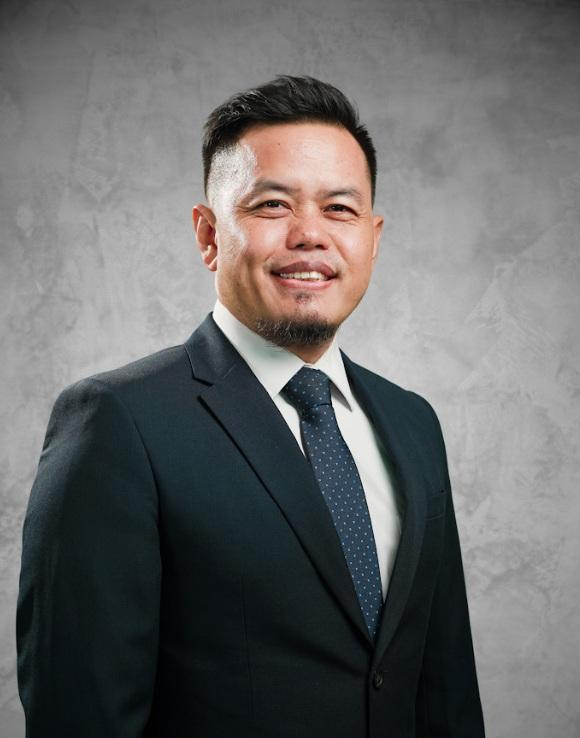
Dr. H. Arif Pratama, M.Pd.
Pendiri utama dan penggagas sekolahBerperan merumuskan visi pendidikan, standar akademik, dan sistem pembinaan karakter siswa.
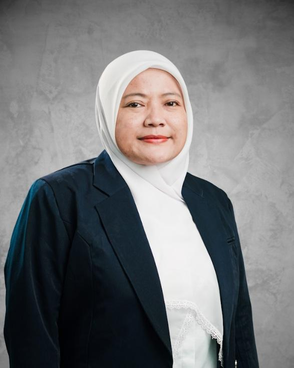
Dra. Siti Rahmawati, M.Pd.
Pendiri bidang kurikulumBertanggung jawab dalam konsep pengembangan kurikulum, metode pembelajaran, dan peningkatan kompetensi guru.
Ir. Bima Saputra, M.Kom.
Pendiri bidang teknologi dan inovasiMenggagas pemanfaatan teknologi informasi, laboratorium komputer, dan program inovasi digital bagi siswa.
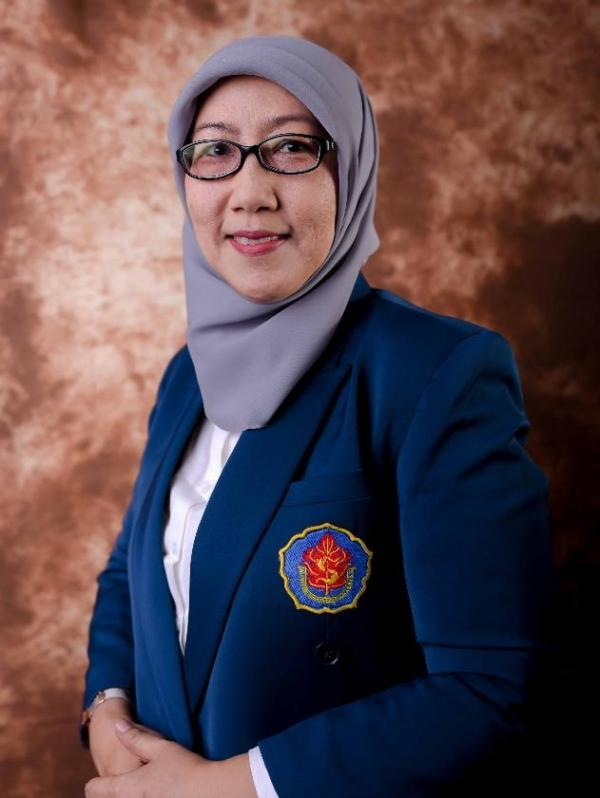
Dr. Maya Kusumawardani, M.M.
Pendiri bidang pengembangan siswaMengembangkan program kepemimpinan, kegiatan sosial, ekstrakurikuler, dan kemitraan masyarakat.
VISI DAN MISI SEKOLAH
VISI
Menjadi sekolah menengah atas unggulan yang menghasilkan generasi berkarakter, berprestasi, inovatif, dan mampu bersaing di tingkat internasional.
MISI
- Menyelenggarakan pendidikan berkualitas dengan pembelajaran yang kreatif dan inovatif.
- Membentuk siswa yang disiplin, jujur, bertanggung jawab, dan memiliki jiwa kepemimpinan.
- Mengembangkan kemampuan teknologi, bahasa asing, sains, seni, dan olahraga.
- Mendorong siswa untuk aktif mengikuti kompetisi akademik maupun nonakademik.
- Membangun kerja sama pendidikan dengan sekolah dan lembaga internasional.
- Menanamkan kepedulian terhadap lingkungan dan masyarakat.
PRESTASI UNGGULAN SEKOLAH
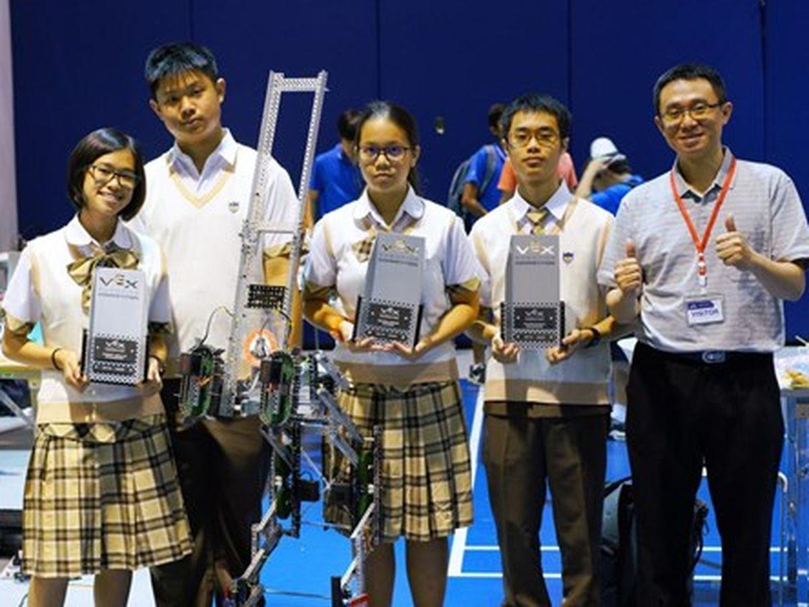
Juara 1 Kompetisi Robotika Pelajar Nasional
2025Tim robotika berhasil meraih juara melalui inovasi robot pemilah sampah otomatis berbasis sensor.
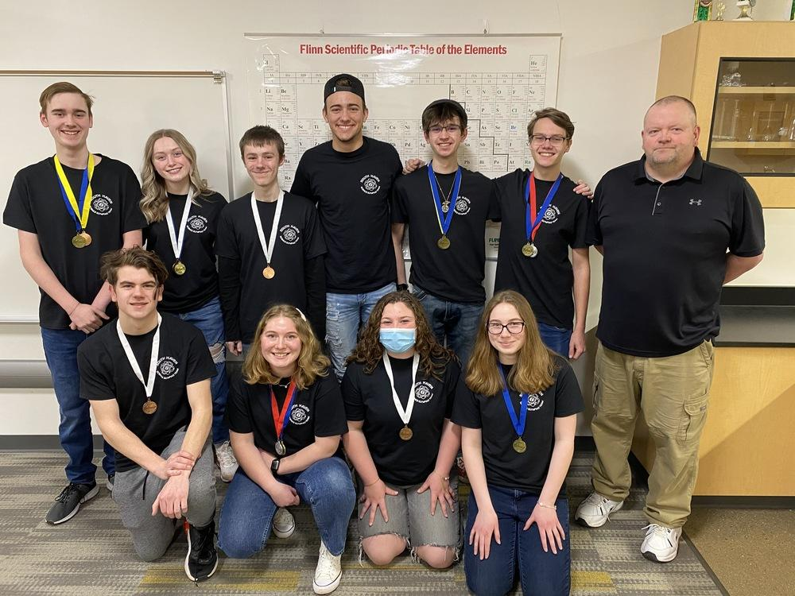
Medali Emas Olimpiade Sains Pelajar
2025Siswa memperoleh medali dalam kompetisi sains bidang informatika dan matematika.
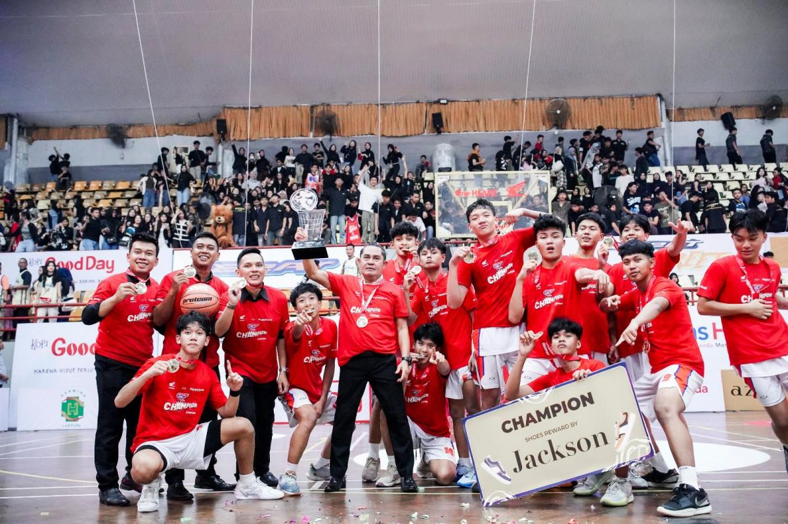
Juara Turnamen Basket Antarpelajar
2024Tim basket meraih gelar juara tingkat provinsi melalui pembinaan olahraga yang terarah.
Siswa Baru 2025/2026
320 SiswaSiswa Aktif
1.248 SiswaSiswa International
24 SiswaRekomendasi Ekskul Terbaik
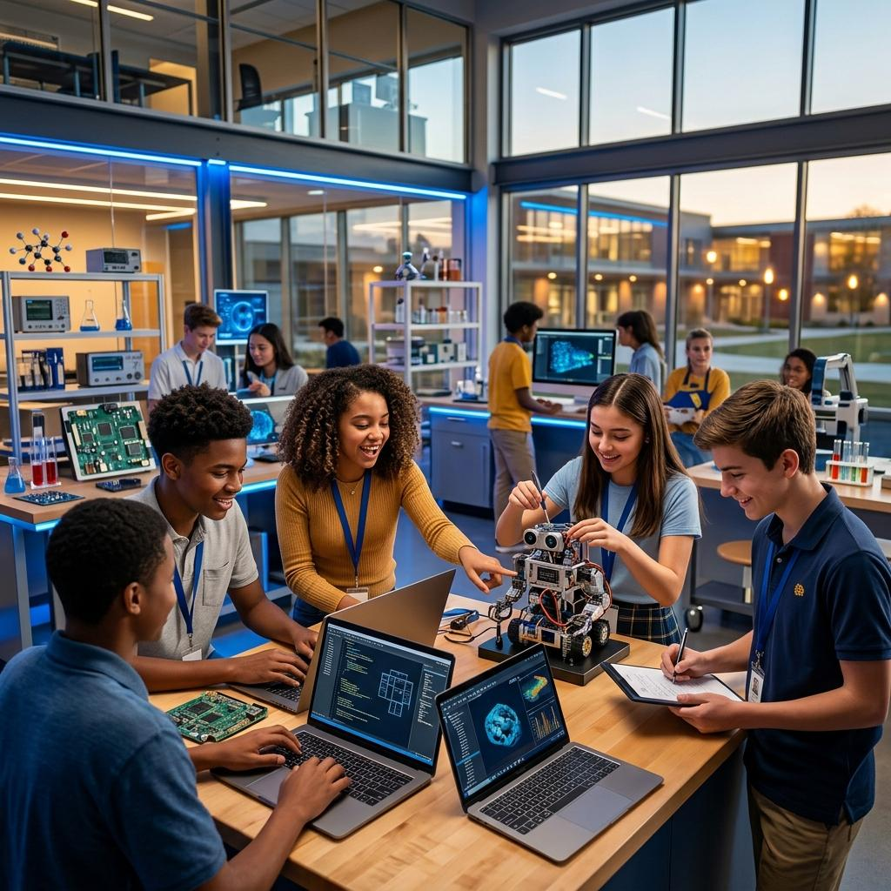
Robotics and IoT Club
Merakit robot, mempelajari sensor, mikrokontroler, Internet of Things, dan mengikuti kompetisi teknologi.
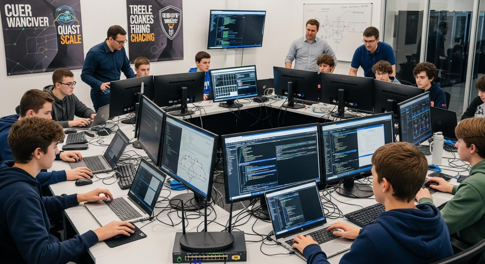
Cyber Security and Programming
Belajar pemrograman, jaringan komputer, keamanan digital, pengembangan website, dan kompetisi Capture the Flag secara legal.
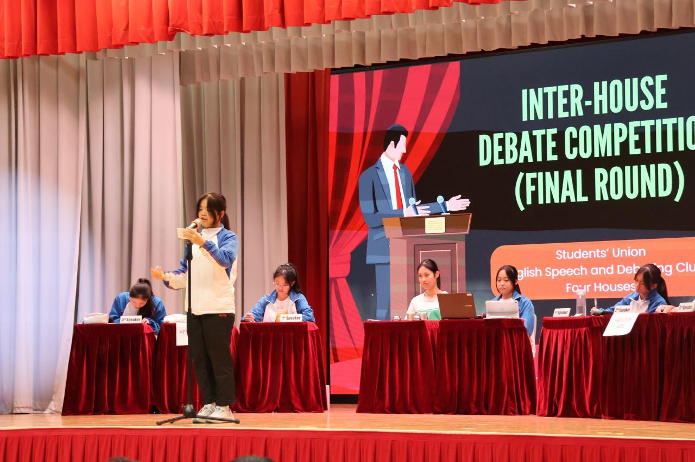
English Debate and Public Speaking
Melatih cara berkomunikasi, argumentasi, presentasi, dan kemampuan berbahasa Inggris.
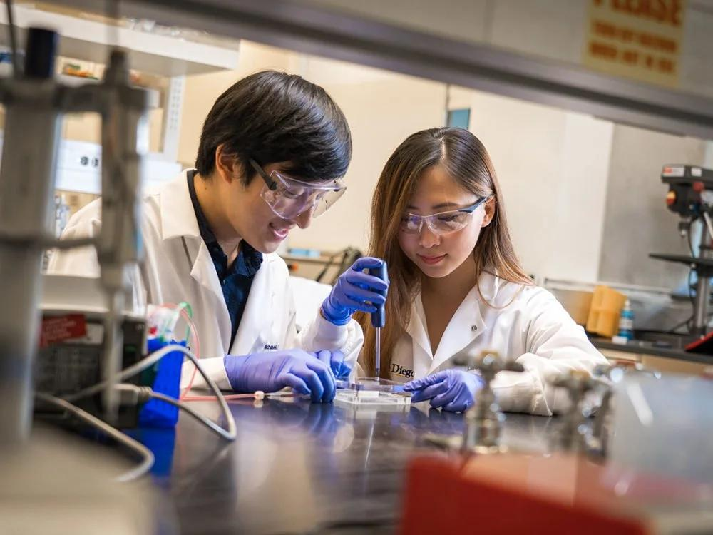
Science Research Club
Mengembangkan penelitian, eksperimen, karya ilmiah, dan inovasi untuk kompetisi sains.
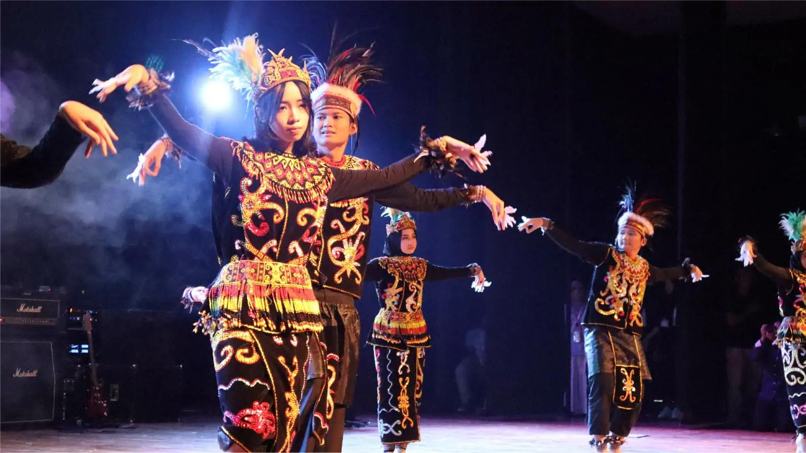
Seni dan Budaya Nusantara
Mengembangkan bakat tari tradisional, musik, teater, dan pelestarian budaya Indonesia.
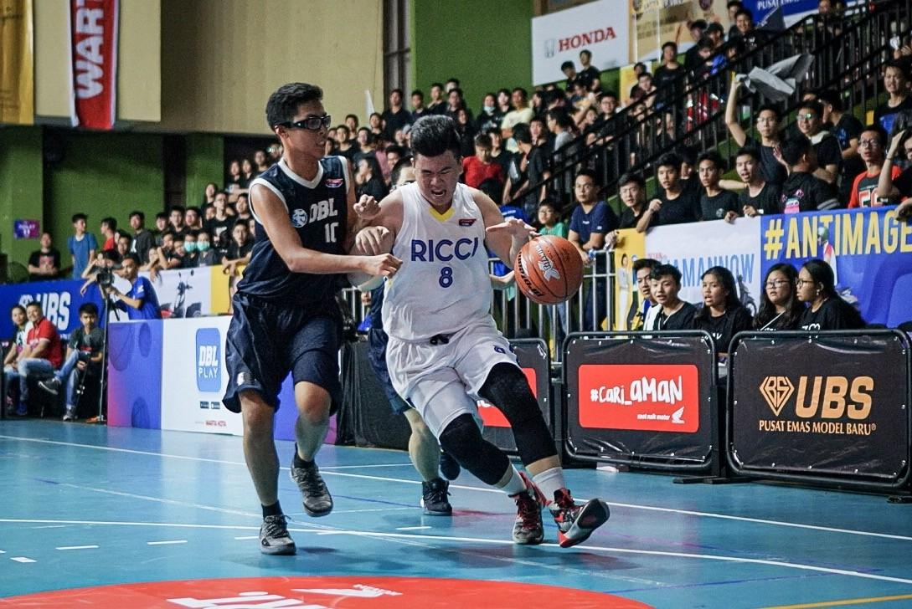
Basket dan Futsal club
Membangun kebugaran, kerja sama tim, kedisiplinan, dan kemampuan berkompetisi.
PERAN SMA PRISULA PRAJA
SMA Trisula Praja memiliki peran penting dalam konsep pengembangan pendidikan, yaitu:
- Meningkatkan kualitas pendidikan: membekali siswa dengan ilmu pengetahuan dan keterampilan yang relevan.
- Membangun karakter: membentuk pribadi yang jujur, disiplin, mandiri, dan bertanggung jawab.
- Mengembangkan teknologi: memperkenalkan pemrograman, jaringan komputer, dan inovasi digital.
- Mendorong prestasi: menyediakan ruang bagi siswa untuk mengembangkan bakat akademik dan nonakademik.
- Memperluas wawasan global: menyiapkan siswa untuk berinteraksi dalam lingkungan multikultural.
- Meningkatkan kepedulian sosial: mendorong kegiatan pengabdian masyarakat dan pelestarian lingkungan.
SMA TRISULA PRAJA
“Cerdas dalam Ilmu, Tangguh dalam Karakter, Unggul dalam Prestasi.”